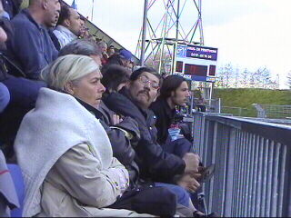

|
FC Den Bosch - Roda JC (3-1) 13 april 2002 |
Het Ecco stadion. Het kleinste van de eredivisie.
Leuk idee.

Ook de tapdame in het spelershome is gekleed in
het wit/blauw.
De Rodasupporters droegen de boodschap "Nooit
FC Limburg" uit via een groot en enkele kleine
spandoeken en een T-shirt actie.
Jan van Dijk blijft voeling met de club houden.

Let even niet op de pa van Van Dessel maar op
de persoon daarachter. Het is de geschorste
Ivan Vicelich.
Prima kans voor Vincent Lachambre.
Trainer Vloet waarvan beweerd wordt dat hij
Leekens mogelijk zal opvolgen.
Een kopbal van Lawal wordt op de doellijn door
een Bosschenaar weggekopt.

Kalac had in de eerste helft weinig werk.
Den Bosch ontsnapt wederom. Op de achtergrond
de tijdelijke nood-tribune.
Koukleum Fatih Sonkaya heeft zich weer eens
geheel ingewikkeld in zijn sjaal.
In de tweede helft krijgt Regillio Vrede al na tien
minuten zijn tweede, dus rode kaart.
Enkele tellen daarna heeft De Freitas de bal
ingekopt (55).
Tom Soetaers scoort uit een mooi genomen
vrije trap 1-1 (57). Lachambre juicht.
Hier gaat Tom alleen op Mampaey af maar heeft
helaas te weinig kracht over voor een zuiver schot.
Mourad heeft 2-1 gescoord (81).
De begrijpelijke vreugde.
Het wordt nog erger voor Roda. Man of the match,
De Freitas scoort 3-1 (83).
Roda staat na deze nederlaag nog steeds in de
gevarenzone.
De heren Joop en Frans Rondel willen nog even
op de foto met het Roda-logo.
Het voetbal was niks vanavond maar het drukke
Bossche uitgaansleven was niet verkeerd!
©KPD